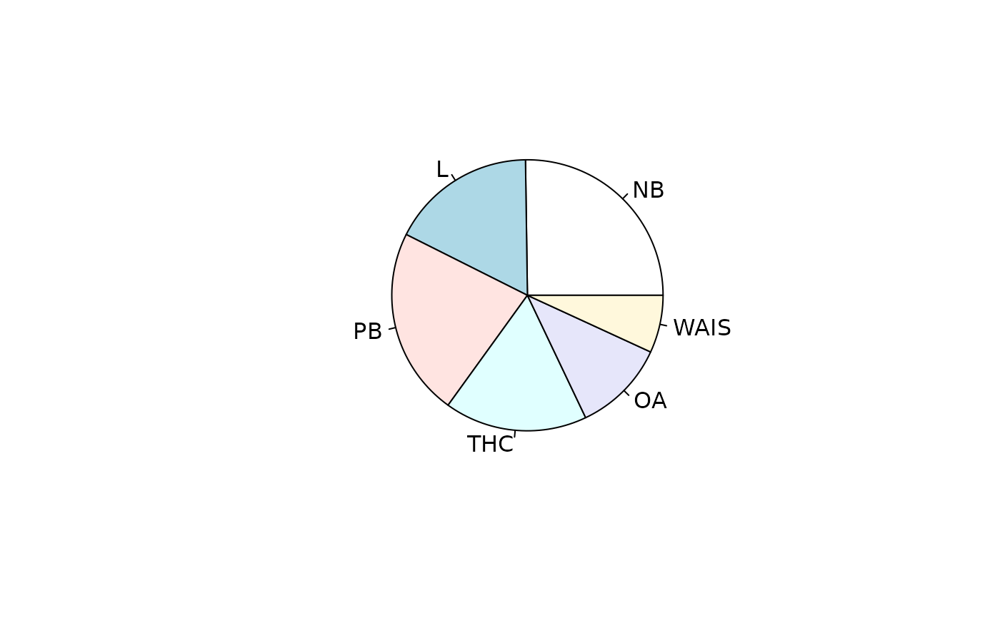

icons.RdObject icons_matrix is a matrix of nine rows and six columns,
one column for each of six icons relevant to climate change. The
matrix entries show the number of respondents who indicated which icon
they found most concerning. The nine rows show different classes of
respondents who were exposed to different subsets (of size four) of
the six icons.
The columns correspond to the different stimulus icons used, detailed
below. An extensive discussion is given in West and Hankin 2008, and
Hankin 2010; an updated analysis is given in the icons
vignette.
Object icons is the corresponding likelihood function, which
can be created with saffy(icons_table), as in file
inst/icons.Rmd. There is a detailed vignette, icons,
provided with the package.
The object is used in inst/ternaryplot_hyper2.Rmd which shows a
ternary plot of random samples.
data(icons)The six icons were used in this study were:
polar bears, which face extinction through loss of ice floe hunting grounds
The Norfolk Broads, which flood due to intense rainfall events
London flooding, as a result of sea level rise
The Thermo-haline circulation, which may slow or stop as a result of anthropogenic modification of the hydrological cycle
Oceanic acidification as a result of anthropogenic emissions of carbon dioxide
The West Antarctic Ice Sheet, which is calving into the sea as a result of climate change
Data kindly supplied by Saffron O'Neill of the University of East Anglia
S. J. O'Neill and M. Hulme 2009. An iconic approach for representing climate change. Global Environmental Change, 19:402-410
I. Lorenzoni and N. Pidgeon 2005. Defining Dangers of Climate Change and Individual Behaviour: Closing the Gap. In Avoiding Dangerous Climate Change (conference proceedings), UK Met Office, Exeter, 1-3 February
R. K. S. Hankin 2010. “A generalization of the Dirichlet distribution”. Journal of Statistical software, 33:11
data(icons)
pie(icons_maxp)

equalp.test(icons)
#>
#> Constrained support maximization
#>
#> data: icons
#> null hypothesis: NB = L = PB = THC = OA = WAIS
#> null estimate:
#> NB L PB THC OA WAIS
#> 0.1666667 0.1666667 0.1666667 0.1666667 0.1666667 0.1666667
#> (argmax, constrained optimization)
#> Support for null: -184.3772 + K
#>
#> alternative hypothesis: sum p_i=1
#> alternative estimate:
#> NB L PB THC OA WAIS
#> 0.25230411 0.17364433 0.22458188 0.17011281 0.11068604 0.06867083
#> (argmax, free optimization)
#> Support for alternative: -174.9974 + K
#>
#> degrees of freedom: 5
#> support difference = 9.379715
#> p-value: 0.002130838
#>